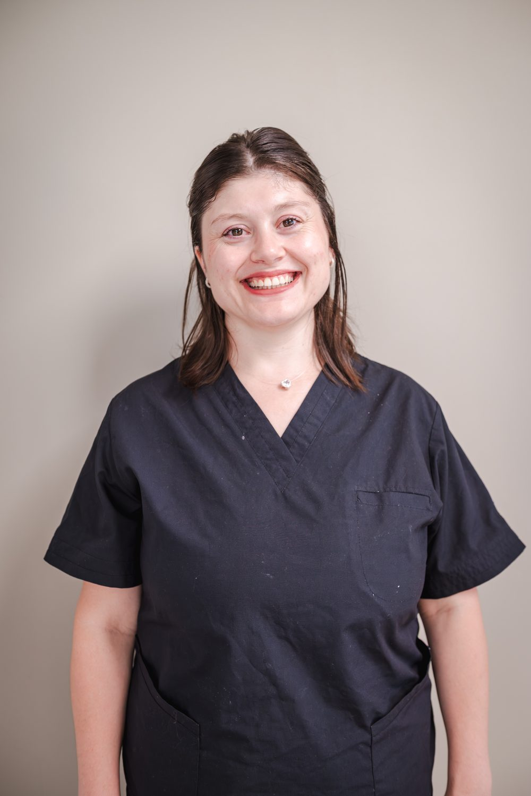

Trenzar Lazos
@trenzarlazosPelucas · Donación sin cargo
Asesoría de enfermería oncológica
Oncobrújula es orientación profesional para pacientes y familias que atraviesan un tratamiento oncológico. Te ayudo a entender lo que dijo el equipo, a ordenar las dudas y a saber qué hacer en casa. No reemplazo a tu oncólogo/a ni administro tratamientos.
Si hay una urgencia (fiebre con quimioterapia, sangrado, disnea, dolor que no cede), no es este espacio: es guardia.
Una videollamada de 50 a 60 minutos, pensada para que salgas con más claridad de la que entraste.
Cuidados domiciliarios: por ahora no forman parte del servicio.
Escribís por Instagram o WhatsApp y contás, en pocas líneas, en qué momento del camino estás.
Te confirmo disponibilidad y el honorario.
Reservás el horario. La reserva no implica un plan posterior: es un encuentro.
Nos vemos por videollamada, 50–60 minutos.
Te dejo un resumen escrito y, si hace falta, una ficha.

Lic. Natalia Mansilla
Enfermería oncológica
Enfermera desde 2015. Empecé a trabajar en 2013 y desde entonces no paré: internación, terapia, guardia. Un tiempo en Córdoba, en trasplante de médula, oncohematología y hospital de día. Desde 2020 estoy en CIMA, en oncología ambulatoria. También doy clases, ahora en la Universidad Nacional de Río Cuarto.
Vi muchas veces lo mismo: después del consultorio, la persona se queda con más dudas que respuestas. No siempre llega toda la información. No siempre se sabe a quién preguntarle. Y el sistema, encima, es un laberinto.
Oncobrújula es para que no tengas que armar sola ese mapa. Te escucho, ordenamos lo que quedó colgado y armamos las preguntas para tu equipo. Con calma.
Formación
Una red de confianza para orientar, no un equipo de Oncobrújula. Presencial en la ciudad; si hay modalidad virtual, se coordina con cada profesional. Oncobrújula no agenda ni factura estos turnos.
Pelucas · Donación sin cargo
Pelucas · Venta
Implantes capilares sin cirugía · Alopecia oncológica
Coop. Cristiana de Ayuda al Enfermo Necesitado · Cáritas Argentina Río Cuarto
Ayuda solidaria con medicamentos oncológicos a quienes más lo necesitan.
Se entregan medicamentos solo con receta médica del hospital o de centros de salud.
Una gía para que ninguna duda quede sin respuesta. Llevala al turno y anotá.
Descargar PDFEsta ficha es educativa. No reemplaza la consulta con tu equipo de salud.
No. La asesoría es informativa y de acompañamiento. El objetivo es que llegues más preparada a la consulta con tu equipo.
No. Podemos ordenar opciones y preguntas para que vos decidas con tu médico/a, respetando tus valores.
Sí. Justamente ahí suele haber más niebla: estudios, tiempos, segunda opinión, qué llevar al primer turno.
No. Si hay fiebre durante la quimioterapia, sangrado, falta de aire o un dolor que no cede, andá a la guardia.
Por ahora no. Oncobrújula hoy es orientación.
No. Son referentes para orientar. Cada uno atiende por su cuenta; yo no tomo esos turnos ni cobro por esa derivación.
La persona en tratamiento o un familiar, con el consentimiento de quien está transitando el proceso.
Una videollamada para entender lo que dijo el equipo, ordenar las dudas y saber qué hacer en casa.